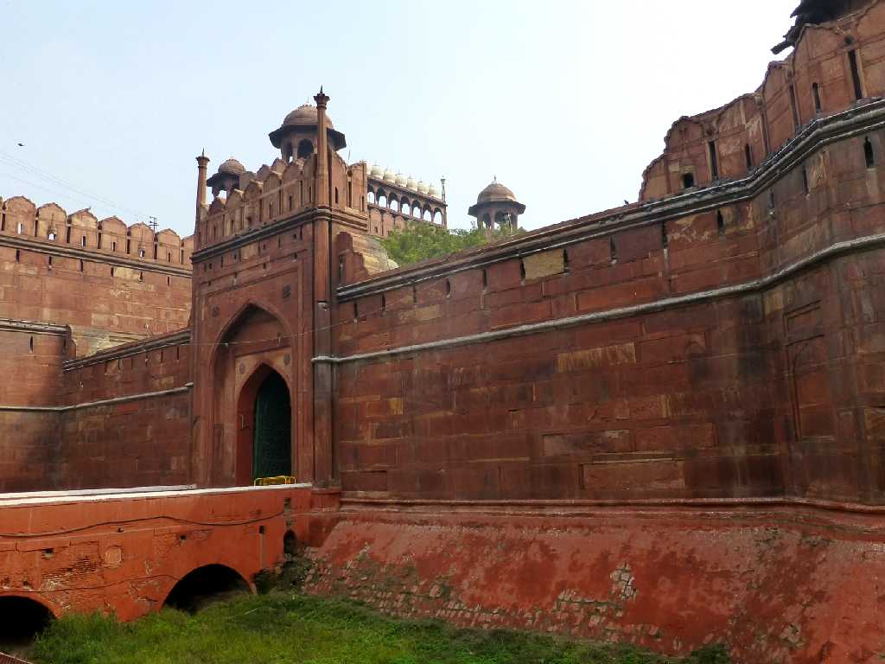
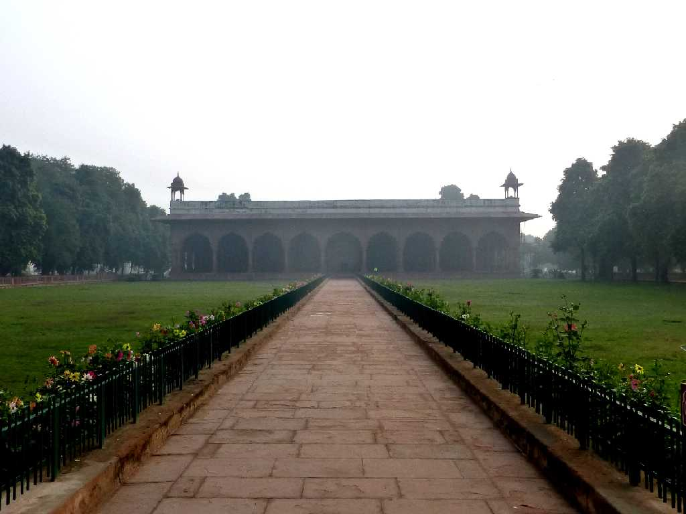
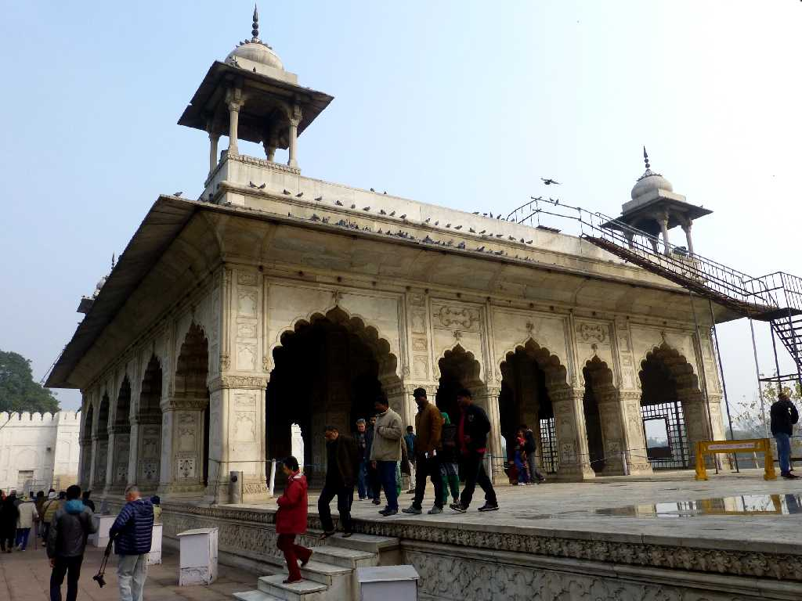
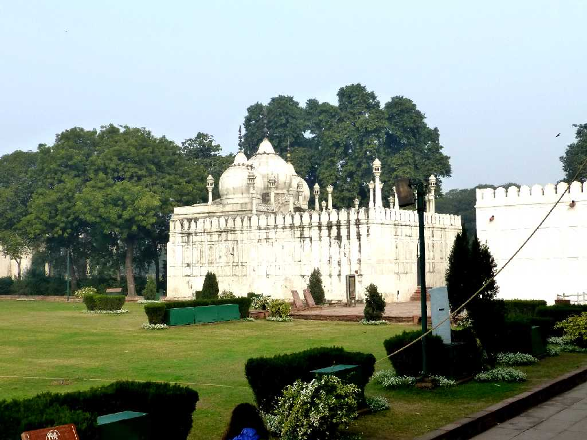
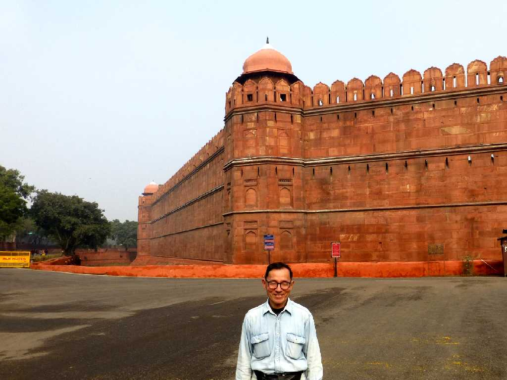

Delhi Gate Lal Qila Red Fort Delhi
ムガール帝国第５代皇帝シャージャハーンがアグラからデリーに遷都し新都シャージャハーンバードに１６３９年創った赤砂岩の城壁を持つ城砦

Deewan E Aam Red Fort
一般謁見の宮殿

Diwan E Khas Red Fort
貴賓謁見の宮殿

Moti Masjid Red Fort
真珠のモスク
Lahore Gate Red Fort Delhi
今はインドから独立したパキスタンの街ラホールに向かっている西の正門ラホール門 毎年インド独立記念の首相演説が行われている

January 27 2015 Red Walls Red Fort
城砦を囲む全長２,５００ｍの赤砂岩の城壁が美しい